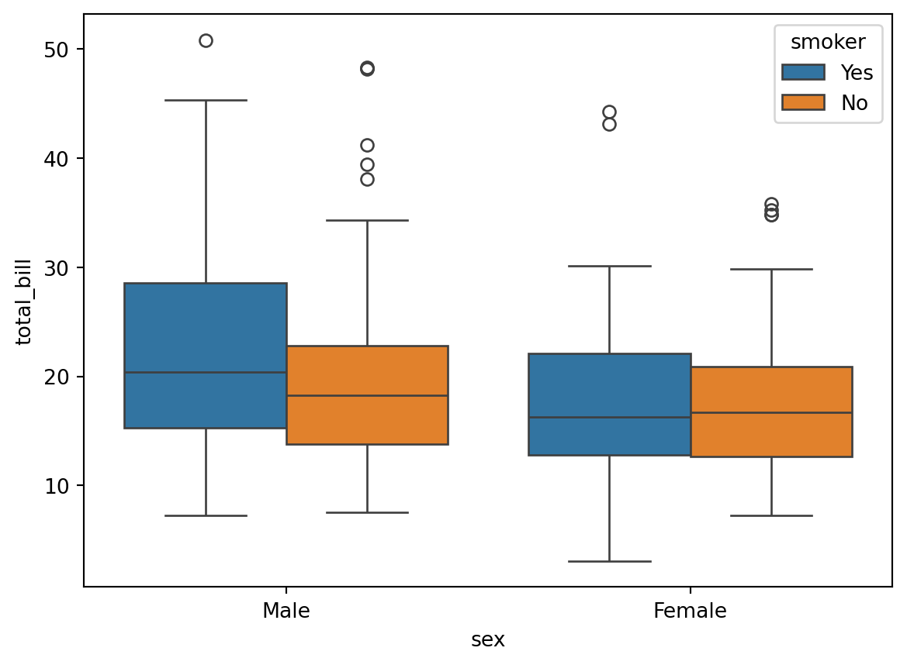
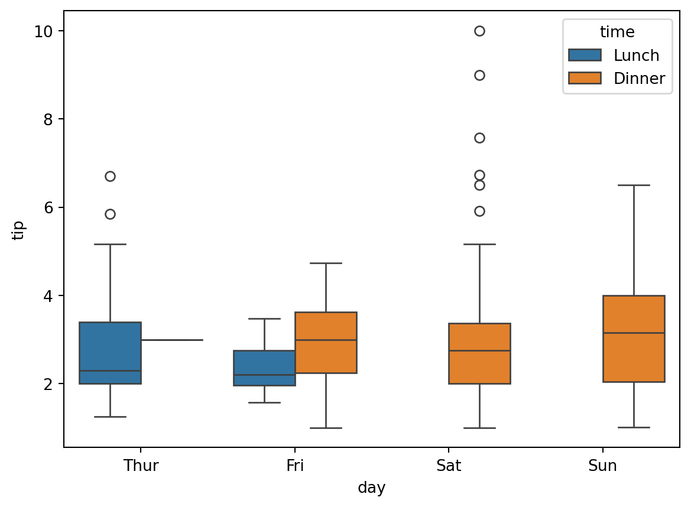
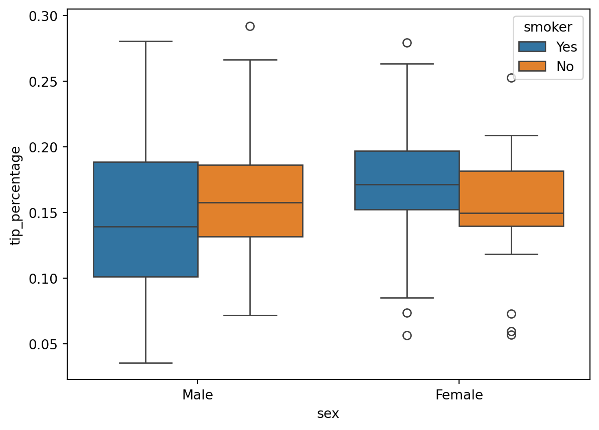
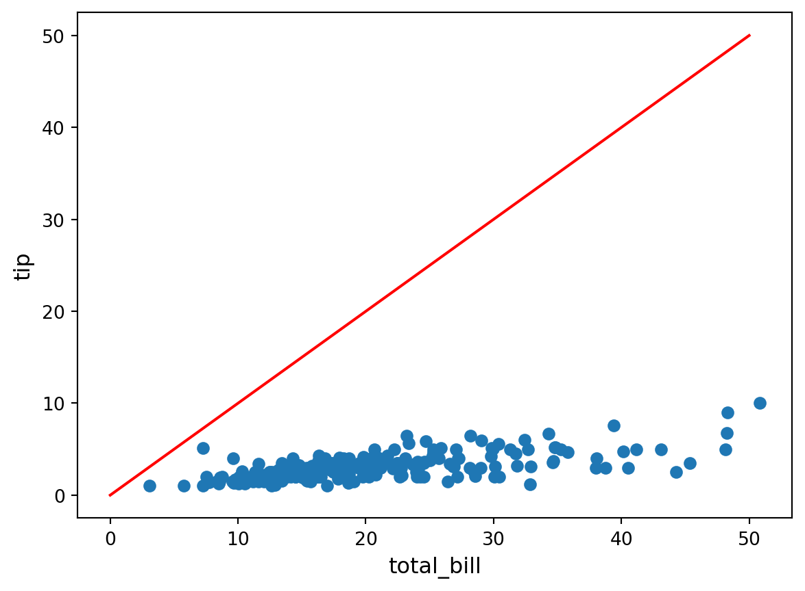

Code
import pandas as pd
fruits = {
"apples": [3, 2, 0, 1],
"oranges": [0, 3, 7, 2]
}
df_fruits = pd.DataFrame(fruits)
df_fruits| apples | oranges | |
|---|---|---|
| 0 | 3 | 0 |
| 1 | 2 | 3 |
| 2 | 0 | 7 |
| 3 | 1 | 2 |
pandasThe pandas library (https://pandas.pydata.org) is one of the most used tool at the disposal of people working with data in python today.
DataFrame object (a table of data) with a huge set of functionalitiesThrough pandas, you get acquainted with your data by analyzing it
you get acquainted with your data by cleaning and transforming it
matplotlib or seaborn or others)pandas is a central component of the python “stack” for data science
pandas is built on top of numpyDataFrame is often fed to plotting functions or machine learning algorithms (such as scikit-learn)jupyter, leading to a nice interactive environment for data exploration and modelingThe two primary components of pandas are the Series and DataFrame.
A Series is essentially a column
A DataFrame is a multi-dimensional table made up of a collection of Series with equal length
DataFrame from scratchimport pandas as pd
fruits = {
"apples": [3, 2, 0, 1],
"oranges": [0, 3, 7, 2]
}
df_fruits = pd.DataFrame(fruits)
df_fruits| apples | oranges | |
|---|---|---|
| 0 | 3 | 0 |
| 1 | 2 | 3 |
| 2 | 0 | 7 |
| 3 | 1 | 2 |
type(df_fruits)pandas.core.frame.DataFramedf_fruits["apples"]0 3
1 2
2 0
3 1
Name: apples, dtype: int64type(df_fruits["apples"])pandas.core.series.SeriesDataFrame uses a contiguous indexdf_fruits = pd.DataFrame(fruits, index=["Daniel", "Sean", "Pierce", "Roger"])
df_fruits| apples | oranges | |
|---|---|---|
| Daniel | 3 | 0 |
| Sean | 2 | 3 |
| Pierce | 0 | 7 |
| Roger | 1 | 2 |
.loc versus .iloc.loc locates by name.iloc locates by numerical indexdf_fruits| apples | oranges | |
|---|---|---|
| Daniel | 3 | 0 |
| Sean | 2 | 3 |
| Pierce | 0 | 7 |
| Roger | 1 | 2 |
# What's in Sean's basket ?
df_fruits.loc['Sean']apples 2
oranges 3
Name: Sean, dtype: int64# Who has oranges ?
df_fruits.loc[:, 'oranges']Daniel 0
Sean 3
Pierce 7
Roger 2
Name: oranges, dtype: int64# How many apples in Pierce's basket ?
df_fruits.loc['Pierce', 'apples']np.int64(0)df_fruits| apples | oranges | |
|---|---|---|
| Daniel | 3 | 0 |
| Sean | 2 | 3 |
| Pierce | 0 | 7 |
| Roger | 1 | 2 |
df_fruits.iloc[2, 1]np.int64(7)DataFrameA DataFrame has many attributes
df_fruits.columnsIndex(['apples', 'oranges'], dtype='object')df_fruits.indexIndex(['Daniel', 'Sean', 'Pierce', 'Roger'], dtype='object')df_fruits.dtypesapples int64
oranges int64
dtype: objectA DataFrame has many methods
df_fruits.info()<class 'pandas.core.frame.DataFrame'>
Index: 4 entries, Daniel to Roger
Data columns (total 2 columns):
# Column Non-Null Count Dtype
--- ------ -------------- -----
0 apples 4 non-null int64
1 oranges 4 non-null int64
dtypes: int64(2)
memory usage: 268.0+ bytesdf_fruits.describe()| apples | oranges | |
|---|---|---|
| count | 4.000000 | 4.00000 |
| mean | 1.500000 | 3.00000 |
| std | 1.290994 | 2.94392 |
| min | 0.000000 | 0.00000 |
| 25% | 0.750000 | 1.50000 |
| 50% | 1.500000 | 2.50000 |
| 75% | 2.250000 | 4.00000 |
| max | 3.000000 | 7.00000 |
What if we don’t know how many apples are in Sean’s basket ?
df_fruits.loc['Sean', 'apples'] = None
df_fruits| apples | oranges | |
|---|---|---|
| Daniel | 3.0 | 0 |
| Sean | NaN | 3 |
| Pierce | 0.0 | 7 |
| Roger | 1.0 | 2 |
df_fruits.describe()| apples | oranges | |
|---|---|---|
| count | 3.000000 | 4.00000 |
| mean | 1.333333 | 3.00000 |
| std | 1.527525 | 2.94392 |
| min | 0.000000 | 0.00000 |
| 25% | 0.500000 | 1.50000 |
| 50% | 1.000000 | 2.50000 |
| 75% | 2.000000 | 4.00000 |
| max | 3.000000 | 7.00000 |
Note that count is 3 for apples now, since we have 1 missing value among the 4
To review the members of objects of class pandas.DataFrame, dir() and module inspect are convenient.
[x for x in dir(df_fruits) if not x.startswith('_') and not callable(x)]import inspect
# Get a list of methods
membres = inspect.getmembers(df_fruits)
method_names = [m[0] for m in membres
if callable(m[1]) and not m[0].startswith('_')]
print(method_names)['abs', 'add', 'add_prefix', 'add_suffix', 'agg', 'aggregate', 'align', 'all', 'any', 'apply', 'applymap', 'asfreq', 'asof', 'assign', 'astype', 'at_time', 'backfill', 'between_time', 'bfill', 'bool', 'boxplot', 'clip', 'combine', 'combine_first', 'compare', 'convert_dtypes', 'copy', 'corr', 'corrwith', 'count', 'cov', 'cummax', 'cummin', 'cumprod', 'cumsum', 'describe', 'diff', 'div', 'divide', 'dot', 'drop', 'drop_duplicates', 'droplevel', 'dropna', 'duplicated', 'eq', 'equals', 'eval', 'ewm', 'expanding', 'explode', 'ffill', 'fillna', 'filter', 'first', 'first_valid_index', 'floordiv', 'from_dict', 'from_records', 'ge', 'get', 'groupby', 'gt', 'head', 'hist', 'idxmax', 'idxmin', 'iloc', 'infer_objects', 'info', 'insert', 'interpolate', 'isetitem', 'isin', 'isna', 'isnull', 'items', 'iterrows', 'itertuples', 'join', 'keys', 'kurt', 'kurtosis', 'last', 'last_valid_index', 'le', 'loc', 'lt', 'map', 'mask', 'max', 'mean', 'median', 'melt', 'memory_usage', 'merge', 'min', 'mod', 'mode', 'mul', 'multiply', 'ne', 'nlargest', 'notna', 'notnull', 'nsmallest', 'nunique', 'pad', 'pct_change', 'pipe', 'pivot', 'pivot_table', 'plot', 'pop', 'pow', 'prod', 'product', 'quantile', 'query', 'radd', 'rank', 'rdiv', 'reindex', 'reindex_like', 'rename', 'rename_axis', 'reorder_levels', 'replace', 'resample', 'reset_index', 'rfloordiv', 'rmod', 'rmul', 'rolling', 'round', 'rpow', 'rsub', 'rtruediv', 'sample', 'select_dtypes', 'sem', 'set_axis', 'set_flags', 'set_index', 'shift', 'skew', 'sort_index', 'sort_values', 'squeeze', 'stack', 'std', 'sub', 'subtract', 'sum', 'swapaxes', 'swaplevel', 'tail', 'take', 'to_clipboard', 'to_csv', 'to_dict', 'to_excel', 'to_feather', 'to_gbq', 'to_hdf', 'to_html', 'to_json', 'to_latex', 'to_markdown', 'to_numpy', 'to_orc', 'to_parquet', 'to_period', 'to_pickle', 'to_records', 'to_sql', 'to_stata', 'to_string', 'to_timestamp', 'to_xarray', 'to_xml', 'transform', 'transpose', 'truediv', 'truncate', 'tz_convert', 'tz_localize', 'unstack', 'update', 'value_counts', 'var', 'where', 'xs']others = [x for x in membres
if not callable(x[1])]
[x[0] for x in others if not x[0].startswith('_')]['T',
'apples',
'at',
'attrs',
'axes',
'columns',
'dtypes',
'empty',
'flags',
'iat',
'index',
'ndim',
'oranges',
'shape',
'size',
'style',
'values']Ooooops, we forgot about the bananas !
df_fruits["bananas"] = [0, 2, 1, 6]
df_fruits| apples | oranges | bananas | |
|---|---|---|---|
| Daniel | 3.0 | 0 | 0 |
| Sean | NaN | 3 | 2 |
| Pierce | 0.0 | 7 | 1 |
| Roger | 1.0 | 2 | 6 |
And we forgot the dates !
df_fruits['time'] = [
"2020/10/08 12:13", "2020/10/07 11:37",
"2020/10/10 14:07", "2020/10/09 10:51"
]
df_fruits| apples | oranges | bananas | time | |
|---|---|---|---|---|
| Daniel | 3.0 | 0 | 0 | 2020/10/08 12:13 |
| Sean | NaN | 3 | 2 | 2020/10/07 11:37 |
| Pierce | 0.0 | 7 | 1 | 2020/10/10 14:07 |
| Roger | 1.0 | 2 | 6 | 2020/10/09 10:51 |
df_fruits.dtypesapples float64
oranges int64
bananas int64
time object
dtype: objecttype(df_fruits.loc["Roger", "time"])strIt is not a date but a string (str) ! So we convert this column to something called datetime
df_fruits["time"] = pd.to_datetime(df_fruits["time"])
df_fruits| apples | oranges | bananas | time | |
|---|---|---|---|---|
| Daniel | 3.0 | 0 | 0 | 2020-10-08 12:13:00 |
| Sean | NaN | 3 | 2 | 2020-10-07 11:37:00 |
| Pierce | 0.0 | 7 | 1 | 2020-10-10 14:07:00 |
| Roger | 1.0 | 2 | 6 | 2020-10-09 10:51:00 |
df_fruits.dtypesapples float64
oranges int64
bananas int64
time datetime64[ns]
dtype: objectEvery data science framework implements some datetime handling scheme. For Python see Python official documentation on datetime module
What if we want to keep only the baskets after (including) October, 9th ?
df_fruits.loc[df_fruits["time"] >= pd.Timestamp("2020/10/09")]| apples | oranges | bananas | time | |
|---|---|---|---|---|
| Pierce | 0.0 | 7 | 1 | 2020-10-10 14:07:00 |
| Roger | 1.0 | 2 | 6 | 2020-10-09 10:51:00 |
df_fruits| apples | oranges | bananas | time | |
|---|---|---|---|---|
| Daniel | 3.0 | 0 | 0 | 2020-10-08 12:13:00 |
| Sean | NaN | 3 | 2 | 2020-10-07 11:37:00 |
| Pierce | 0.0 | 7 | 1 | 2020-10-10 14:07:00 |
| Roger | 1.0 | 2 | 6 | 2020-10-09 10:51:00 |
df_fruits.loc[:, "oranges":"time"]| oranges | bananas | time | |
|---|---|---|---|
| Daniel | 0 | 0 | 2020-10-08 12:13:00 |
| Sean | 3 | 2 | 2020-10-07 11:37:00 |
| Pierce | 7 | 1 | 2020-10-10 14:07:00 |
| Roger | 2 | 6 | 2020-10-09 10:51:00 |
df_fruits.loc["Daniel":"Sean", "apples":"bananas"]| apples | oranges | bananas | |
|---|---|---|---|
| Daniel | 3.0 | 0 | 0 |
| Sean | NaN | 3 | 2 |
df_fruits[["apples", "time"]]| apples | time | |
|---|---|---|
| Daniel | 3.0 | 2020-10-08 12:13:00 |
| Sean | NaN | 2020-10-07 11:37:00 |
| Pierce | 0.0 | 2020-10-10 14:07:00 |
| Roger | 1.0 | 2020-10-09 10:51:00 |
What if we want to write the file ?
df_fruits| apples | oranges | bananas | time | |
|---|---|---|---|---|
| Daniel | 3.0 | 0 | 0 | 2020-10-08 12:13:00 |
| Sean | NaN | 3 | 2 | 2020-10-07 11:37:00 |
| Pierce | 0.0 | 7 | 1 | 2020-10-10 14:07:00 |
| Roger | 1.0 | 2 | 6 | 2020-10-09 10:51:00 |
df_fruits.to_csv("fruits.csv")# Use !dir on windows
!ls -alh | grep fru-rw-rw-r-- 1 boucheron boucheron 163 avril 3 15:08 fruits.csv!head -n 5 fruits.csv,apples,oranges,bananas,time
Daniel,3.0,0,0,2020-10-08 12:13:00
Sean,,3,2,2020-10-07 11:37:00
Pierce,0.0,7,1,2020-10-10 14:07:00
Roger,1.0,2,6,2020-10-09 10:51:00The tips dataset comes through Kaggle
This dataset is a treasure trove of information from a collection of case studies for business statistics. Special thanks to Bryant and Smith for their diligent work:
Bryant, P. G. and Smith, M (1995) Practical Data Analysis: Case Studies in Business Statistics. Homewood, IL: Richard D. Irwin Publishing.
You can also access this dataset now through the Python package Seaborn.
It contains data about a restaurant: the bill, tip and some informations about the customers.
A data pipeline usually starts with Extraction, that is gathering data from some source, possibly in a galaxy far, far awy. Here follows a toy extraction pattern
URL using package requestsimport requests
import os
# The path containing your notebook
path_data = './'
# The name of the file
filename = 'tips.csv'
if os.path.exists(os.path.join(path_data, filename)):
print('The file %s already exists.' % os.path.join(path_data, filename))
else:
url = 'https://raw.githubusercontent.com/mwaskom/seaborn-data/refs/heads/master/tips.csv'
r = requests.get(url)
with open(os.path.join(path_data, filename), 'wb') as f:
f.write(r.content)
print('Downloaded file %s.' % os.path.join(path_data, filename))df = pd.read_csv(
"tips.csv",
delimiter=","
)The data can be obtained from package seaborn.
import seaborn as sns
sns_ds = sns.get_dataset_names()
'tips' in sns_ds
df = sns.load_dataset('tips')# `.head()` shows the first rows of the dataframe
df.head(n=10)| total_bill | tip | sex | smoker | day | time | size | |
|---|---|---|---|---|---|---|---|
| 0 | 16.99 | 1.01 | Female | No | Sun | Dinner | 2 |
| 1 | 10.34 | 1.66 | Male | No | Sun | Dinner | 3 |
| 2 | 21.01 | 3.50 | Male | No | Sun | Dinner | 3 |
| 3 | 23.68 | 3.31 | Male | No | Sun | Dinner | 2 |
| 4 | 24.59 | 3.61 | Female | No | Sun | Dinner | 4 |
| 5 | 25.29 | 4.71 | Male | No | Sun | Dinner | 4 |
| 6 | 8.77 | 2.00 | Male | No | Sun | Dinner | 2 |
| 7 | 26.88 | 3.12 | Male | No | Sun | Dinner | 4 |
| 8 | 15.04 | 1.96 | Male | No | Sun | Dinner | 2 |
| 9 | 14.78 | 3.23 | Male | No | Sun | Dinner | 2 |
df.info()<class 'pandas.core.frame.DataFrame'>
RangeIndex: 244 entries, 0 to 243
Data columns (total 7 columns):
# Column Non-Null Count Dtype
--- ------ -------------- -----
0 total_bill 244 non-null float64
1 tip 244 non-null float64
2 sex 244 non-null category
3 smoker 244 non-null category
4 day 244 non-null category
5 time 244 non-null category
6 size 244 non-null int64
dtypes: category(4), float64(2), int64(1)
memory usage: 7.4 KBdf.loc[42, "day"]'Sun'type(df.loc[42, "day"])strBy default, columns that are non-numerical contain strings (str type)
category typeAn important type in pandas is category for variables that are non-numerical
Pro tip. It’s always a good idea to tell pandas which columns should be imported as categorical
So, let’s read again the file specifying some dtypes to the read_csv function
dtypes = {
"sex": "category",
"smoker": "category",
"day": "category",
"time": "category"
}
df = pd.read_csv("tips.csv", dtype=dtypes)--------------------------------------------------------------------------- FileNotFoundError Traceback (most recent call last) Cell In[41], line 8 1 dtypes = { 2 "sex": "category", 3 "smoker": "category", 4 "day": "category", 5 "time": "category" 6 } ----> 8 df = pd.read_csv("tips.csv", dtype=dtypes) File ~/sandbox/IFEBY310/.venv/lib/python3.12/site-packages/pandas/io/parsers/readers.py:1026, in read_csv(filepath_or_buffer, sep, delimiter, header, names, index_col, usecols, dtype, engine, converters, true_values, false_values, skipinitialspace, skiprows, skipfooter, nrows, na_values, keep_default_na, na_filter, verbose, skip_blank_lines, parse_dates, infer_datetime_format, keep_date_col, date_parser, date_format, dayfirst, cache_dates, iterator, chunksize, compression, thousands, decimal, lineterminator, quotechar, quoting, doublequote, escapechar, comment, encoding, encoding_errors, dialect, on_bad_lines, delim_whitespace, low_memory, memory_map, float_precision, storage_options, dtype_backend) 1013 kwds_defaults = _refine_defaults_read( 1014 dialect, 1015 delimiter, (...) 1022 dtype_backend=dtype_backend, 1023 ) 1024 kwds.update(kwds_defaults) -> 1026 return _read(filepath_or_buffer, kwds) File ~/sandbox/IFEBY310/.venv/lib/python3.12/site-packages/pandas/io/parsers/readers.py:620, in _read(filepath_or_buffer, kwds) 617 _validate_names(kwds.get("names", None)) 619 # Create the parser. --> 620 parser = TextFileReader(filepath_or_buffer, **kwds) 622 if chunksize or iterator: 623 return parser File ~/sandbox/IFEBY310/.venv/lib/python3.12/site-packages/pandas/io/parsers/readers.py:1620, in TextFileReader.__init__(self, f, engine, **kwds) 1617 self.options["has_index_names"] = kwds["has_index_names"] 1619 self.handles: IOHandles | None = None -> 1620 self._engine = self._make_engine(f, self.engine) File ~/sandbox/IFEBY310/.venv/lib/python3.12/site-packages/pandas/io/parsers/readers.py:1880, in TextFileReader._make_engine(self, f, engine) 1878 if "b" not in mode: 1879 mode += "b" -> 1880 self.handles = get_handle( 1881 f, 1882 mode, 1883 encoding=self.options.get("encoding", None), 1884 compression=self.options.get("compression", None), 1885 memory_map=self.options.get("memory_map", False), 1886 is_text=is_text, 1887 errors=self.options.get("encoding_errors", "strict"), 1888 storage_options=self.options.get("storage_options", None), 1889 ) 1890 assert self.handles is not None 1891 f = self.handles.handle File ~/sandbox/IFEBY310/.venv/lib/python3.12/site-packages/pandas/io/common.py:873, in get_handle(path_or_buf, mode, encoding, compression, memory_map, is_text, errors, storage_options) 868 elif isinstance(handle, str): 869 # Check whether the filename is to be opened in binary mode. 870 # Binary mode does not support 'encoding' and 'newline'. 871 if ioargs.encoding and "b" not in ioargs.mode: 872 # Encoding --> 873 handle = open( 874 handle, 875 ioargs.mode, 876 encoding=ioargs.encoding, 877 errors=errors, 878 newline="", 879 ) 880 else: 881 # Binary mode 882 handle = open(handle, ioargs.mode) FileNotFoundError: [Errno 2] No such file or directory: 'tips.csv'
df.dtypestotal_bill float64
tip float64
sex category
smoker category
day category
time category
size int64
dtype: object# The describe method only shows statistics for the numerical columns by default
df.describe()| total_bill | tip | size | |
|---|---|---|---|
| count | 244.000000 | 244.000000 | 244.000000 |
| mean | 19.785943 | 2.998279 | 2.569672 |
| std | 8.902412 | 1.383638 | 0.951100 |
| min | 3.070000 | 1.000000 | 1.000000 |
| 25% | 13.347500 | 2.000000 | 2.000000 |
| 50% | 17.795000 | 2.900000 | 2.000000 |
| 75% | 24.127500 | 3.562500 | 3.000000 |
| max | 50.810000 | 10.000000 | 6.000000 |
# We use the include="all" option to see everything
df.describe(include="all")| total_bill | tip | sex | smoker | day | time | size | |
|---|---|---|---|---|---|---|---|
| count | 244.000000 | 244.000000 | 244 | 244 | 244 | 244 | 244.000000 |
| unique | NaN | NaN | 2 | 2 | 4 | 2 | NaN |
| top | NaN | NaN | Male | No | Sat | Dinner | NaN |
| freq | NaN | NaN | 157 | 151 | 87 | 176 | NaN |
| mean | 19.785943 | 2.998279 | NaN | NaN | NaN | NaN | 2.569672 |
| std | 8.902412 | 1.383638 | NaN | NaN | NaN | NaN | 0.951100 |
| min | 3.070000 | 1.000000 | NaN | NaN | NaN | NaN | 1.000000 |
| 25% | 13.347500 | 2.000000 | NaN | NaN | NaN | NaN | 2.000000 |
| 50% | 17.795000 | 2.900000 | NaN | NaN | NaN | NaN | 2.000000 |
| 75% | 24.127500 | 3.562500 | NaN | NaN | NaN | NaN | 3.000000 |
| max | 50.810000 | 10.000000 | NaN | NaN | NaN | NaN | 6.000000 |
# Correlation between the numerical columns
df.corr(numeric_only = True)| total_bill | tip | size | |
|---|---|---|---|
| total_bill | 1.000000 | 0.675734 | 0.598315 |
| tip | 0.675734 | 1.000000 | 0.489299 |
| size | 0.598315 | 0.489299 | 1.000000 |
?df.corrmatplotlib and seabornLet’s show how we can use matplotlib and seaborn to visualize data contained in a pandas dataframe
import matplotlib.pyplot as pltsns.jointplot(x="total_bill", y="tip", data=df)sns.countplot(x='day', hue="time", data=df)plt.figure(figsize=(7, 5))
sns.boxplot(x='day', y='total_bill', hue='time', data=df)
plt.legend(loc="upper left")plt.figure(figsize=(7, 5))
sns.violinplot(x='day', y='total_bill', hue='time', split=True, data=df)
plt.legend(loc="upper left")sns.boxplot(x='sex', y='total_bill', hue='smoker', data=df)
sns.boxplot(x='day', y='tip', hue='time', data=df)
sns.violinplot(x='day', y='tip', hue='time', data=df)pandasLet us read again the tips.csv file
import pandas as pd
dtypes = {
"sex": "category",
"smoker": "category",
"day": "category",
"time": "category"
}
df = pd.read_csv("tips.csv", dtype=dtypes)
df.head()--------------------------------------------------------------------------- FileNotFoundError Traceback (most recent call last) Cell In[55], line 10 1 import pandas as pd 3 dtypes = { 4 "sex": "category", 5 "smoker": "category", 6 "day": "category", 7 "time": "category" 8 } ---> 10 df = pd.read_csv("tips.csv", dtype=dtypes) 11 df.head() File ~/sandbox/IFEBY310/.venv/lib/python3.12/site-packages/pandas/io/parsers/readers.py:1026, in read_csv(filepath_or_buffer, sep, delimiter, header, names, index_col, usecols, dtype, engine, converters, true_values, false_values, skipinitialspace, skiprows, skipfooter, nrows, na_values, keep_default_na, na_filter, verbose, skip_blank_lines, parse_dates, infer_datetime_format, keep_date_col, date_parser, date_format, dayfirst, cache_dates, iterator, chunksize, compression, thousands, decimal, lineterminator, quotechar, quoting, doublequote, escapechar, comment, encoding, encoding_errors, dialect, on_bad_lines, delim_whitespace, low_memory, memory_map, float_precision, storage_options, dtype_backend) 1013 kwds_defaults = _refine_defaults_read( 1014 dialect, 1015 delimiter, (...) 1022 dtype_backend=dtype_backend, 1023 ) 1024 kwds.update(kwds_defaults) -> 1026 return _read(filepath_or_buffer, kwds) File ~/sandbox/IFEBY310/.venv/lib/python3.12/site-packages/pandas/io/parsers/readers.py:620, in _read(filepath_or_buffer, kwds) 617 _validate_names(kwds.get("names", None)) 619 # Create the parser. --> 620 parser = TextFileReader(filepath_or_buffer, **kwds) 622 if chunksize or iterator: 623 return parser File ~/sandbox/IFEBY310/.venv/lib/python3.12/site-packages/pandas/io/parsers/readers.py:1620, in TextFileReader.__init__(self, f, engine, **kwds) 1617 self.options["has_index_names"] = kwds["has_index_names"] 1619 self.handles: IOHandles | None = None -> 1620 self._engine = self._make_engine(f, self.engine) File ~/sandbox/IFEBY310/.venv/lib/python3.12/site-packages/pandas/io/parsers/readers.py:1880, in TextFileReader._make_engine(self, f, engine) 1878 if "b" not in mode: 1879 mode += "b" -> 1880 self.handles = get_handle( 1881 f, 1882 mode, 1883 encoding=self.options.get("encoding", None), 1884 compression=self.options.get("compression", None), 1885 memory_map=self.options.get("memory_map", False), 1886 is_text=is_text, 1887 errors=self.options.get("encoding_errors", "strict"), 1888 storage_options=self.options.get("storage_options", None), 1889 ) 1890 assert self.handles is not None 1891 f = self.handles.handle File ~/sandbox/IFEBY310/.venv/lib/python3.12/site-packages/pandas/io/common.py:873, in get_handle(path_or_buf, mode, encoding, compression, memory_map, is_text, errors, storage_options) 868 elif isinstance(handle, str): 869 # Check whether the filename is to be opened in binary mode. 870 # Binary mode does not support 'encoding' and 'newline'. 871 if ioargs.encoding and "b" not in ioargs.mode: 872 # Encoding --> 873 handle = open( 874 handle, 875 ioargs.mode, 876 encoding=ioargs.encoding, 877 errors=errors, 878 newline="", 879 ) 880 else: 881 # Binary mode 882 handle = open(handle, ioargs.mode) FileNotFoundError: [Errno 2] No such file or directory: 'tips.csv'
pandas : broadcastingLet’s add a column that contains the tip percentage
df["tip_percentage"] = df["tip"] / df["total_bill"]
df.head()| total_bill | tip | sex | smoker | day | time | size | tip_percentage | |
|---|---|---|---|---|---|---|---|---|
| 0 | 16.99 | 1.01 | Female | No | Sun | Dinner | 2 | 0.059447 |
| 1 | 10.34 | 1.66 | Male | No | Sun | Dinner | 3 | 0.160542 |
| 2 | 21.01 | 3.50 | Male | No | Sun | Dinner | 3 | 0.166587 |
| 3 | 23.68 | 3.31 | Male | No | Sun | Dinner | 2 | 0.139780 |
| 4 | 24.59 | 3.61 | Female | No | Sun | Dinner | 4 | 0.146808 |
The computation
```{python}
df["tip"] / df["total_bill"]
```uses a broadcast rule.
numpy arrays, Series or pandas dataframes when the computation makes sense in view of their respective shapeThis principle is called broadcast or broadcasting.
Broadcasting is a key feature of numpy ndarray, see
df["tip"].shape, df["total_bill"].shape((244,), (244,))The tip and total_billcolumns have the same shape, so broadcasting performs pairwise division.
This corresponds to the following “hand-crafted” approach with a for loop:
for i in range(df.shape[0]):
df.loc[i, "tip_percentage"] = df.loc[i, "tip"] / df.loc[i, "total_bill"]But using such a loop is:
NEVER use Python for-loops unless you need to !
%%timeit -n 10
for i in range(df.shape[0]):
df.loc[i, "tip_percentage"] = df.loc[i, "tip"] / df.loc[i, "total_bill"]23.4 ms ± 68.3 μs per loop (mean ± std. dev. of 7 runs, 10 loops each)%%timeit -n 10
df["tip_percentage"] = df["tip"] / df["total_bill"]71.2 μs ± 13.3 μs per loop (mean ± std. dev. of 7 runs, 10 loops each)The for loop is \(\approx\) 100 times slower ! (even worse on larger data)
DataFrameWhen you want to change a value in a DataFrame, never use
df["tip_percentage"].loc[i] = 42but use
df.loc[i, "tip_percentage"] = 42Use a single loc or iloc statement. The first version might not work: it might modify a copy of the column and not the dataframe itself !
Another example of broadcasting is:
(100 * df[["tip_percentage"]]).head()| tip_percentage | |
|---|---|
| 0 | 5.944673 |
| 1 | 16.054159 |
| 2 | 16.658734 |
| 3 | 13.978041 |
| 4 | 14.680765 |
where we multiplied each entry of the tip_percentage column by 100.
Note the difference between
df[['tip_percentage']]which returns a DataFrame containing only the tip_percentage column and
df['tip_percentage']which returns a Series containing the data of the tip_percentage column
sns.jointplot(
x="total_bill",
y="tip_percentage",
data=df
)sns.boxplot(
x='sex',
y='tip_percentage',
hue='smoker',
data=df
)tip_percentage outliers ?sns.boxplot(
x='sex',
y='tip_percentage',
hue='smoker',
data=df.loc[df["tip_percentage"] <= 0.3]
)
Object identity
id(df)131548824967296groupby and aggregateMany computations can be formulated as a groupby followed by and aggregation.
tip and tip percentage each day ?df.head()| total_bill | tip | sex | smoker | day | time | size | tip_percentage | |
|---|---|---|---|---|---|---|---|---|
| 0 | 16.99 | 1.01 | Female | No | Sun | Dinner | 2 | 0.059447 |
| 1 | 10.34 | 1.66 | Male | No | Sun | Dinner | 3 | 0.160542 |
| 2 | 21.01 | 3.50 | Male | No | Sun | Dinner | 3 | 0.166587 |
| 3 | 23.68 | 3.31 | Male | No | Sun | Dinner | 2 | 0.139780 |
| 4 | 24.59 | 3.61 | Female | No | Sun | Dinner | 4 | 0.146808 |
try:
df.groupby("day", observed=True).mean()
except TypeError:
print('TypeError: category dtype does not support aggregation "mean"')TypeError: category dtype does not support aggregation "mean"But we do not care about the size column here, so we can use instead
(
df[["total_bill", "tip", "tip_percentage", "day"]]
.groupby("day")
.mean()
)/tmp/ipykernel_74090/1740663163.py:3: FutureWarning:
The default of observed=False is deprecated and will be changed to True in a future version of pandas. Pass observed=False to retain current behavior or observed=True to adopt the future default and silence this warning.
| total_bill | tip | tip_percentage | |
|---|---|---|---|
| day | |||
| Thur | 17.682742 | 2.771452 | 0.161276 |
| Fri | 17.151579 | 2.734737 | 0.169913 |
| Sat | 20.441379 | 2.993103 | 0.153152 |
| Sun | 21.410000 | 3.255132 | 0.166897 |
If we want to be more precise, we can groupby using several columns
(
df[["total_bill", "tip", "tip_percentage", "day", "time"]] # selection
.groupby(["day","time"]) # partition
.mean() # aggregation
)/tmp/ipykernel_74090/391063870.py:3: FutureWarning:
The default of observed=False is deprecated and will be changed to True in a future version of pandas. Pass observed=False to retain current behavior or observed=True to adopt the future default and silence this warning.
| total_bill | tip | tip_percentage | ||
|---|---|---|---|---|
| day | time | |||
| Thur | Lunch | 17.664754 | 2.767705 | 0.161301 |
| Dinner | 18.780000 | 3.000000 | 0.159744 | |
| Fri | Lunch | 12.845714 | 2.382857 | 0.188765 |
| Dinner | 19.663333 | 2.940000 | 0.158916 | |
| Sat | Lunch | NaN | NaN | NaN |
| Dinner | 20.441379 | 2.993103 | 0.153152 | |
| Sun | Lunch | NaN | NaN | NaN |
| Dinner | 21.410000 | 3.255132 | 0.166897 |
DataFrame with a two-level indexing: on the day and the timeNaN values for empty groups (e.g. Sat, Lunch)Sometimes, it is more convenient to get the groups as columns instead of a multi-level index.
For this, use reset_index:
(
df[["total_bill", "tip", "tip_percentage", "day", "time"]] # selection
.groupby(["day", "time"]) # partition
.mean() # aggregation
.reset_index() # ako ungroup
)/tmp/ipykernel_74090/835267922.py:3: FutureWarning:
The default of observed=False is deprecated and will be changed to True in a future version of pandas. Pass observed=False to retain current behavior or observed=True to adopt the future default and silence this warning.
| day | time | total_bill | tip | tip_percentage | |
|---|---|---|---|---|---|
| 0 | Thur | Lunch | 17.664754 | 2.767705 | 0.161301 |
| 1 | Thur | Dinner | 18.780000 | 3.000000 | 0.159744 |
| 2 | Fri | Lunch | 12.845714 | 2.382857 | 0.188765 |
| 3 | Fri | Dinner | 19.663333 | 2.940000 | 0.158916 |
| 4 | Sat | Lunch | NaN | NaN | NaN |
| 5 | Sat | Dinner | 20.441379 | 2.993103 | 0.153152 |
| 6 | Sun | Lunch | NaN | NaN | NaN |
| 7 | Sun | Dinner | 21.410000 | 3.255132 | 0.166897 |
Computations with pandas can include many operations that are pipelined until the final computation.
Pipelining many operations is good practice and perfectly normal, but in order to make the code readable you can put it between parenthesis (python expression) as follows:
(
df[["total_bill", "tip", "tip_percentage", "day", "time"]]
.groupby(["day", "time"])
.mean()
.reset_index()
# and on top of all this we sort the dataframe with respect
# to the tip_percentage
.sort_values("tip_percentage")
)/tmp/ipykernel_74090/45053252.py:3: FutureWarning:
The default of observed=False is deprecated and will be changed to True in a future version of pandas. Pass observed=False to retain current behavior or observed=True to adopt the future default and silence this warning.
| day | time | total_bill | tip | tip_percentage | |
|---|---|---|---|---|---|
| 5 | Sat | Dinner | 20.441379 | 2.993103 | 0.153152 |
| 3 | Fri | Dinner | 19.663333 | 2.940000 | 0.158916 |
| 1 | Thur | Dinner | 18.780000 | 3.000000 | 0.159744 |
| 0 | Thur | Lunch | 17.664754 | 2.767705 | 0.161301 |
| 7 | Sun | Dinner | 21.410000 | 3.255132 | 0.166897 |
| 2 | Fri | Lunch | 12.845714 | 2.382857 | 0.188765 |
| 4 | Sat | Lunch | NaN | NaN | NaN |
| 6 | Sun | Lunch | NaN | NaN | NaN |
DataFrame with styleNow, we can answer, with style, to the question: what are the average tip percentages along the week ?
(
df[["tip_percentage", "day", "time"]]
.groupby(["day", "time"])
.mean()
# At the end of the pipeline you can use .style
.style
# Print numerical values as percentages
.format("{:.2%}")
.background_gradient()
)/tmp/ipykernel_74090/838795167.py:3: FutureWarning:
The default of observed=False is deprecated and will be changed to True in a future version of pandas. Pass observed=False to retain current behavior or observed=True to adopt the future default and silence this warning.
| tip_percentage | ||
|---|---|---|
| day | time | |
| Thur | Lunch | 16.13% |
| Dinner | 15.97% | |
| Fri | Lunch | 18.88% |
| Dinner | 15.89% | |
| Sat | Lunch | nan% |
| Dinner | 15.32% | |
| Sun | Lunch | nan% |
| Dinner | 16.69% |
NaN valuesBut the NaN values are somewhat annoying. Let’s remove them
(
df[["tip_percentage", "day", "time"]]
.groupby(["day", "time"])
.mean()
# We just add this from the previous pipeline
.dropna()
.style
.format("{:.2%}")
.background_gradient()
)/tmp/ipykernel_74090/2662169510.py:3: FutureWarning:
The default of observed=False is deprecated and will be changed to True in a future version of pandas. Pass observed=False to retain current behavior or observed=True to adopt the future default and silence this warning.
| tip_percentage | ||
|---|---|---|
| day | time | |
| Thur | Lunch | 16.13% |
| Dinner | 15.97% | |
| Fri | Lunch | 18.88% |
| Dinner | 15.89% | |
| Sat | Dinner | 15.32% |
| Sun | Dinner | 16.69% |
Now, we see when tip_percentage is maximal. But what about the standard deviation?
.mean() for now, but we can use several aggregating function using .agg()(
df[["tip_percentage", "day", "time"]]
.groupby(["day", "time"])
.agg(["mean", "std"]) # we feed `agg` with a list of names of callables
.dropna()
.style
.format("{:.2%}")
.background_gradient()
)/tmp/ipykernel_74090/3957220442.py:3: FutureWarning:
The default of observed=False is deprecated and will be changed to True in a future version of pandas. Pass observed=False to retain current behavior or observed=True to adopt the future default and silence this warning.
| tip_percentage | |||
|---|---|---|---|
| mean | std | ||
| day | time | ||
| Thur | Lunch | 16.13% | 3.90% |
| Fri | Lunch | 18.88% | 4.59% |
| Dinner | 15.89% | 4.70% | |
| Sat | Dinner | 15.32% | 5.13% |
| Sun | Dinner | 16.69% | 8.47% |
And we can use also .describe() as aggregation function. Moreover we - use the subset option to specify which column we want to style - we use ("tip_percentage", "count") to access multi-level index
(
df[["tip_percentage", "day", "time"]]
.groupby(["day", "time"])
.describe() # all-purpose summarising function
)/tmp/ipykernel_74090/3924876303.py:3: FutureWarning:
The default of observed=False is deprecated and will be changed to True in a future version of pandas. Pass observed=False to retain current behavior or observed=True to adopt the future default and silence this warning.
| tip_percentage | |||||||||
|---|---|---|---|---|---|---|---|---|---|
| count | mean | std | min | 25% | 50% | 75% | max | ||
| day | time | ||||||||
| Thur | Lunch | 61.0 | 0.161301 | 0.038972 | 0.072961 | 0.137741 | 0.153846 | 0.193424 | 0.266312 |
| Dinner | 1.0 | 0.159744 | NaN | 0.159744 | 0.159744 | 0.159744 | 0.159744 | 0.159744 | |
| Fri | Lunch | 7.0 | 0.188765 | 0.045885 | 0.117735 | 0.167289 | 0.187735 | 0.210996 | 0.259314 |
| Dinner | 12.0 | 0.158916 | 0.047024 | 0.103555 | 0.123613 | 0.144742 | 0.179199 | 0.263480 | |
| Sat | Dinner | 87.0 | 0.153152 | 0.051293 | 0.035638 | 0.123863 | 0.151832 | 0.188271 | 0.325733 |
| Sun | Dinner | 76.0 | 0.166897 | 0.084739 | 0.059447 | 0.119982 | 0.161103 | 0.187889 | 0.710345 |
(
df[["tip_percentage", "day", "time"]]
.groupby(["day", "time"])
.describe()
.dropna()
.style
.bar(subset=[("tip_percentage", "count")])
.background_gradient(subset=[("tip_percentage", "50%")])
)/tmp/ipykernel_74090/673231177.py:3: FutureWarning:
The default of observed=False is deprecated and will be changed to True in a future version of pandas. Pass observed=False to retain current behavior or observed=True to adopt the future default and silence this warning.
| tip_percentage | |||||||||
|---|---|---|---|---|---|---|---|---|---|
| count | mean | std | min | 25% | 50% | 75% | max | ||
| day | time | ||||||||
| Thur | Lunch | 61.000000 | 0.161301 | 0.038972 | 0.072961 | 0.137741 | 0.153846 | 0.193424 | 0.266312 |
| Fri | Lunch | 7.000000 | 0.188765 | 0.045885 | 0.117735 | 0.167289 | 0.187735 | 0.210996 | 0.259314 |
| Dinner | 12.000000 | 0.158916 | 0.047024 | 0.103555 | 0.123613 | 0.144742 | 0.179199 | 0.263480 | |
| Sat | Dinner | 87.000000 | 0.153152 | 0.051293 | 0.035638 | 0.123863 | 0.151832 | 0.188271 | 0.325733 |
| Sun | Dinner | 76.000000 | 0.166897 | 0.084739 | 0.059447 | 0.119982 | 0.161103 | 0.187889 | 0.710345 |
tip based on the total_billAs an example of very simple machine-learning problem, let us try to understand how we can predict tip based on total_bill.
import numpy as np
plt.scatter(df["total_bill"], df["tip"])
plt.xlabel("total_bill", fontsize=12)
plt.ylabel("tip", fontsize=12)Text(0, 0.5, 'tip')There’s a rough linear dependence between the two. Let us try to find it by hand!
Namely, we look for numbers \(b\) and \(w\) such that
tip ≈ b + w × total_billfor all the examples of pairs of (tip, total_bill) we observe in the data.
In machine learning, we say that this is a very simple example of a supervised learning problem (here it is a regression problem), where tip is the label and where total_bill is the (only) feature, for which we intend to use a linear predictor.
plt.scatter(df["total_bill"], df["tip"])
plt.xlabel("total_bill", fontsize=12)
plt.ylabel("tip", fontsize=12)
slope = 1.0
intercept = 0.0
x = np.linspace(0, 50, 1000)
plt.plot(x, intercept + slope * x, color="red")
This might require
# !pip install ipymplimport ipywidgets as widgets
import matplotlib.pyplot as plt
import numpy as np
%matplotlib widget
%matplotlib inline
x = np.linspace(0, 50, 1000)
@widgets.interact(intercept=(-5, 5, 1.), slope=(0, 1, .05))
def update(intercept=0.0, slope=0.5):
plt.scatter(df["total_bill"], df["tip"])
plt.plot(x, intercept + slope * x, color="red")
plt.xlim((0, 50))
plt.ylim((0, 10))
plt.xlabel("total_bill", fontsize=12)
plt.ylabel("tip", fontsize=12)This is kind of tedious to do this by hand… it would be nice to come up with an automated way of doing this. Moreover:
total_bill column to predict the tip, while we know about many other thingsdf.head()| total_bill | tip | sex | smoker | day | time | size | tip_percentage | |
|---|---|---|---|---|---|---|---|---|
| 0 | 16.99 | 1.01 | Female | No | Sun | Dinner | 2 | 0.059447 |
| 1 | 10.34 | 1.66 | Male | No | Sun | Dinner | 3 | 0.160542 |
| 2 | 21.01 | 3.50 | Male | No | Sun | Dinner | 3 | 0.166587 |
| 3 | 23.68 | 3.31 | Male | No | Sun | Dinner | 2 | 0.139780 |
| 4 | 24.59 | 3.61 | Female | No | Sun | Dinner | 4 | 0.146808 |
We can’t perform computations (products and sums) with columns containing categorical variables. So, we can’t use them like this to predict the tip. We need to convert them to numbers somehow.
The most classical approach for this is one-hot encoding (or “create dummies” or “binarize”) of the categorical variables, which can be easily achieved with pandas.get_dummies
Why one-hot ? See wikipedia for a plausible explanation
df_one_hot = pd.get_dummies(df, prefix_sep='#')
df_one_hot.head(5)| total_bill | tip | size | tip_percentage | sex#Male | sex#Female | smoker#Yes | smoker#No | day#Thur | day#Fri | day#Sat | day#Sun | time#Lunch | time#Dinner | |
|---|---|---|---|---|---|---|---|---|---|---|---|---|---|---|
| 0 | 16.99 | 1.01 | 2 | 0.059447 | False | True | False | True | False | False | False | True | False | True |
| 1 | 10.34 | 1.66 | 3 | 0.160542 | True | False | False | True | False | False | False | True | False | True |
| 2 | 21.01 | 3.50 | 3 | 0.166587 | True | False | False | True | False | False | False | True | False | True |
| 3 | 23.68 | 3.31 | 2 | 0.139780 | True | False | False | True | False | False | False | True | False | True |
| 4 | 24.59 | 3.61 | 4 | 0.146808 | False | True | False | True | False | False | False | True | False | True |
Only the categorical columns have been one-hot encoded. For instance, the "day" column is replaced by 4 columns named "day#Thur", "day#Fri", "day#Sat", "day#Sun", since "day" has 4 modalities (see next line).
df['day'].unique()['Sun', 'Sat', 'Thur', 'Fri']
Categories (4, object): ['Thur', 'Fri', 'Sat', 'Sun']df_one_hot.dtypestotal_bill float64
tip float64
size int64
tip_percentage float64
sex#Male bool
sex#Female bool
smoker#Yes bool
smoker#No bool
day#Thur bool
day#Fri bool
day#Sat bool
day#Sun bool
time#Lunch bool
time#Dinner bool
dtype: objectSums over dummies for sex, smoker, day, time and size are all equal to one (by constrution of the one-hot encoded vectors).
day_cols = [col for col in df_one_hot.columns if col.startswith("day")]
df_one_hot[day_cols].head()
df_one_hot[day_cols].sum(axis=1)0 1
1 1
2 1
3 1
4 1
..
239 1
240 1
241 1
242 1
243 1
Length: 244, dtype: int64all(df_one_hot[day_cols].sum(axis=1) == 1)TrueThe most standard solution is to remove a modality (i.e. remove a one-hot encoding vector). Simply achieved by specifying drop_first=True in the get_dummies function.
df["day"].unique()['Sun', 'Sat', 'Thur', 'Fri']
Categories (4, object): ['Thur', 'Fri', 'Sat', 'Sun']pd.get_dummies(df, prefix_sep='#', drop_first=True).head()| total_bill | tip | size | tip_percentage | sex#Female | smoker#No | day#Fri | day#Sat | day#Sun | time#Dinner | |
|---|---|---|---|---|---|---|---|---|---|---|
| 0 | 16.99 | 1.01 | 2 | 0.059447 | True | True | False | False | True | True |
| 1 | 10.34 | 1.66 | 3 | 0.160542 | False | True | False | False | True | True |
| 2 | 21.01 | 3.50 | 3 | 0.166587 | False | True | False | False | True | True |
| 3 | 23.68 | 3.31 | 2 | 0.139780 | False | True | False | False | True | True |
| 4 | 24.59 | 3.61 | 4 | 0.146808 | True | True | False | False | True | True |
Now, if a categorical feature has \(K\) modalities, we use only \(K-1\) dummies. For instance, there is no more sex#Female binary column.
Question. So, a linear regression won’t fit a weight for sex#Female. But, where do the model weights of the dropped binary columns go ?
Answer. They just “go” to the intercept: interpretation of the population bias depends on the “dropped” one-hot encodings.
So, we actually fit: \[\begin{array}{rl} \texttt{tip} \approx b & + w_1 \times \texttt{total_bill} + w_2 \times \texttt{size} \\ & + w_3 \times \texttt{sex#Male} + w_4 \times \texttt{smoker#Yes} \\ & + w_5 \times \texttt{day#Sat} + w_6 \times \texttt{day#Sun} + w_7 \times \texttt{day#Thur} \\ & + w_8 \times \texttt{time#Lunch} \end{array}\]